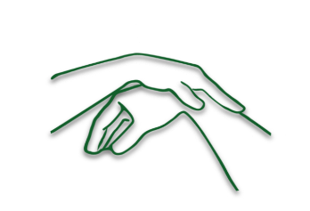

Karine Benvenuti
Kinésiologue
Accueil
Contenu de la séance
Outils
À propos de moi
Tarifs & Contact
Crédit photos
Image by rawpixel.com
on Freepik
Image by vecstock
on Freepik
Image by macrovector
on Freepik
Image by pikisuperstar
on Freepik
Image by Freepik